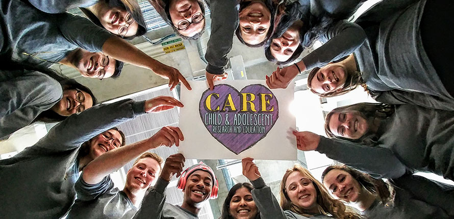
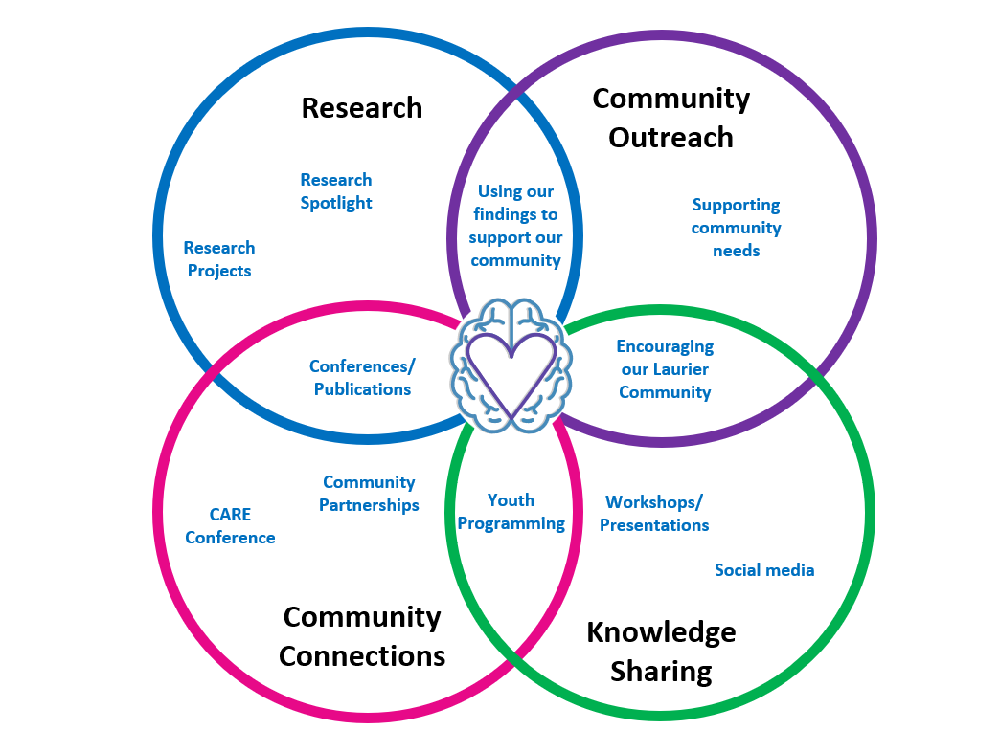

What we do
"Educating the mind without educating the heart is no education at all."
- Aristotle
The Child and Adolescent Research and Education (CARE) Lab was established 2012 and is directed by Dr. Danielle M. Law, associate professor at Wilfrid Laurier University.

The CARE Lab takes an interdisciplinary approach to the study of children and youth.
Our lab is, broadly speaking, interested in studying how children, adolescents, and young adults develop cognitively and socio-emotionally as they interact and socialize using various technologies.

With this in mind, our primary research focus has been in the area of:
- Online aggression
- Associated mental health concerns
- Responsible internet use
- Creating caring communities
Key to our vision is our desire to ensure that research informs the work we do with the community, while simultaneously allowing our work with the community to inform our research and teaching; thus, CARE is comprised of three streams:
- Research
- Knowledge sharing/mobilization
- Community Connections
- Community Outreach
Students can choose to volunteer for one or all of these streams. If you are interested in joining our team or would like more information about what we do, do not hesitate to contact Danielle Law at dlaw@wlu.ca.
Lab Life
Experience the collaborative and engaging environment of the CARE Lab

Current Research Projects
Millie's Milestones SEL Program
Studying the efficacy and sustainability of an SEL program for toddlers and their caregivers. Funded by the Social Sciences and Humanities Research Council's (SSHRC) Partnership Engage Grant in partnership with Nicki Straza and Woodview Mental Health and Autism Services.
Evaluation of the SuperHero in Me SEL Program
Studying the efficacy and sustainability of an SEL program for grade 3 to 5 students, teachers, and their class. Funded by the Social Sciences and Humanities Research Council's (SSHRC) Partnership Engage Grant in partnership with Dr. Judy Eaton, WLU, and Nicki Straza, Woodview Mental Health and Autism Services.
Adolescent Technology Engagement
Associations among technology engagement, self-regulation, and the changing nature of parent, peer, and intimate relationships. Funded by the Canadian Institute for Health Research (CIHR) in collaboration with Dr. Jennifer Shapka, UBC.
Adolescent Socialization via the Internet
Exploration of cognitive and contextual correlates of online risk behaviour. Funded by the Canadian Institute for Health Research (CIHR) in collaboration with Professor Jennifer Shapka, UBC and Professor Hezron Onditi, Dar es Salaam University College of Education.
Cyber-aggression and cyber-victimization (CAV)
Mixed-methods study of structural features and individual differences in online social information processing. Funded by the Social Sciences and Humanities Research Council's (SSHRC) Insight Development Grant. In collaboration with Professor Jennifer Shapka, UBC and Professor Kevin Runions, Telethon Kids Institute, Australia.
Longitudinal Trajectories of Depressive Symptoms
Funded by CIHR; in collaboration with Professor Jose Domene, University of Calgary and Professor Rubab Arim, Statistics Canada.
Internet Socialization and Emerging Adulthood
Funded by Wilfrid Laurier University.